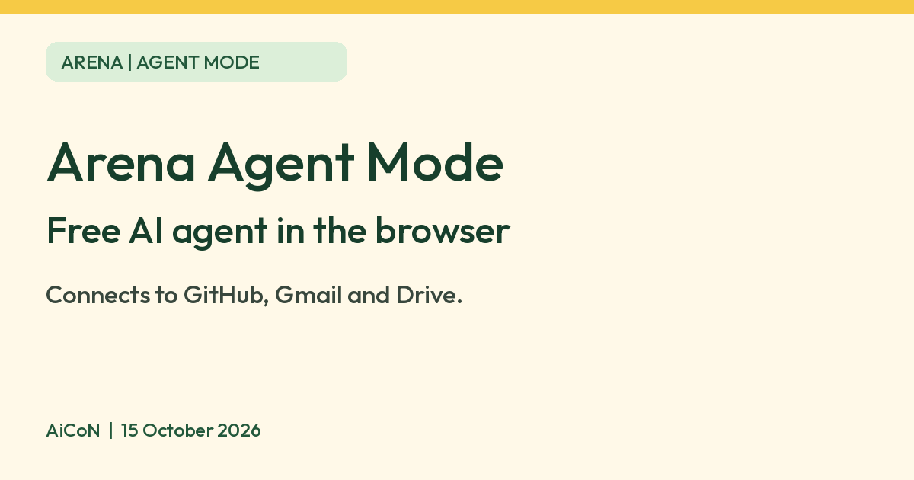

Arena Agent Mode: a free AI agent that connects to GitHub, Gmail and Drive
Arena says its Agent Mode is free for now, and an experiment lets it connect to apps like GitHub, Gmail and Google Drive from the browser.

What it is
Arena (formerly LMArena, at arena.ai) is best known for comparing AI models. Agent Mode is a different part of it. Arena's help centre says you open it at arena.ai/agent, or switch from the default "Battle Mode" in the menu at the top left. Instead of one question and one answer, the AI works through a longer task in a single chat. Arena lists built-in tools: web search, image generation, file upload, coding help and a sandbox with a bash command line where the agent can run things. Arena's own examples are building a website, planning a product launch and doing deep research. It is an AI tool, and we covered Arena's side-by-side voting in an earlier guide.
Is it free?
Yes, for now. Arena's Terms of Use say the company "currently offers the Service free of charge", and also that it keeps the right to charge for the service or any features. Its help page on credits says users get a daily balance of usage credits "that can be used for free". A 24-hour period starts when you send your first prompt, and when you hit the limit you see a countdown to the refresh. The page does not give the number of credits, so we cannot say how much agent work a day gives you. Arena says Battle Mode in Text Arena and Code Arena does not count towards that balance. We did not see an Agent Mode price anywhere.
Connecting your apps
- Which apps: Arena's help page "Connect your apps to Arena" lists Google Drive, Gmail, Google Calendar, Notion, Slack, Linear and GitHub. The live menu we saw on a phone on 15 October 2026 differs: it showed GitHub, Drive, Docs, Notion, Gmail, Linear and Calendar, with Google Docs but no Slack. So the help page and the app do not match, and what you see may differ again. Check your own menu.
- How: open the connector menu near the message box, pick an app, select Connect, then sign in and approve access in the window that opens. You can turn each connector on or off at any time, and the page says the agent only uses the ones you have enabled.
- Examples Arena gives: pull a doc, check your calendar, summarise an email thread or update a Notion page.
- It is an experiment. The help page says this is "currently part of an experiment, so it may not be available to all users".
What it looks like (phone, 15 October 2026)


Coding with GitHub
- Arena's coding page says you connect your GitHub account, choose which organisations and repositories Arena can use under "Manage repositories", and switch GitHub on in Agent Mode.
- Arena's product notes say you can then code, push changes and open pull requests without leaving the browser, with a diff panel to follow the changes.
- When a repository is connected, the help page says the assistant works in a copy of your repo and commits to a working branch. You review changes in the Diff tab, then merge or pull that branch. There is no zip download in that case.
- The help page says there is a Checks window that shows whether automated checks on your commits and pull requests are passing, failing or pending.
- Each chat can create one pull request. After the pull request is merged or closed, the session can no longer push to GitHub, so push your work first.
- Without a repository, your files stay in the session workspace and you can download them as a zip from the workspace panel.
What to watch out for
- You do not pick the AI model. Arena says each Agent Mode session is sent to a randomly chosen model, the model is not revealed after feedback, and the system may switch models if a response is likely to fail.
- Agents act on your accounts. With Gmail, Drive or GitHub connected, the agent can read and change things there. Connect only what you need and limit GitHub access to the repositories you choose.
- Check the work. Arena measures agent mistakes such as acting beyond the request or claiming a task is complete when it is not. Review pull requests before merging.
- 18 and over. The terms say you must be at least 18 or of legal age to form a binding contract, and the privacy policy says the service is not intended for under-18s.
Privacy and data
- Arena's terms say you keep ownership of your content but grant Arena a broad licence to use it, including to operate and improve the service and for marketing and promotion.
- The terms say Arena may share your inputs with third-party AI providers, and that those providers may not be required to keep them confidential.
- The privacy policy says it can receive data from third-party services you link, including content made available under your settings on that service.
- Your chats and content can be visible to others if you choose to share them.
- The policy says that if you revoke Arena's access to a linked service, that does not apply to information Arena already received.
- The policy says Arena does not sell or share personal information as defined by US state privacy laws, and does not use it for targeted advertising.
- We did not find a page that says exactly how data from connected apps such as Gmail is stored or used for Agent Mode, so we are not claiming anything beyond the terms above.
India
- We found no India restriction on the pages we read, but Arena does not state country availability for Agent Mode or connectors. We did not test it from India. Because connectors are an experiment, you may not see them even if the site works for you.
Frequently asked questions
Is Arena Agent Mode free?
Arena says the service is free of charge for now and gives a daily balance of free usage credits. It reserves the right to charge later.
Can it open a pull request?
Arena says yes, once you connect GitHub and choose a repository. It creates one pull request per chat.
Can it read my Gmail?
Arena lists Gmail as a connector you can turn on. It says the agent only uses connectors you enable.
Sources: How to use Agent Mode, Connect your apps, Coding in Agent Mode, Credit system, Terms of Use, Privacy Policy, Product changelog. Checked 15 October 2026.
No Arena logo is used, because Arena's terms say its logos are trademarks that need permission. Independent guide, not affiliated.